Astra, a Agente ganense, utiliza energias cósmicas para moldar o campo de batalha a seu bel-prazer. Com total domínio da sua forma astral e um talento estratégico nato, ela está sempre anos-luz à frente dos inimigos.
Função: Controlador
PULSO NOVA
O Pulso Nova carrega brevemente e depois estoura, causando concussão a todos os jogadores na
área.
NEBULOSA
Posicione Estrelas na Forma Astral. ATIVE uma Estrela para transformá-la em uma Nebulosa
(fumaça)
POÇO GRAVITACIONAL
ATIVE uma estrela para formar um Poço Gravitacional.
Jogadores na área são puxados em direção ao centro antes de ele explodir, deixando
Vulnerável quem ainda estiver preso ali.
DIVISA CÓSMICA
Uma divisa Cósmica infinita surge e conecta os pontos selecionados. A Divisa Cósmica bloqueia
disparos e abafa muito o som.
ASTRA

Breach, o homem-biônico sueco, dispara poderosos jatos cinéticos para forçar a abertura de um caminho pelo território inimigo. O dano e a interrupção que ele causa garantem que nenhuma luta seja justa.
Função: Iniciador
ESTOPIM
DISPARE a carga para armar um jato de ação rápida pela parede.
A carga é detonada, cegando todos os jogadores que estiverem olhando para ela.
FALHA TECTÔNICA
Use para iniciar o terremoto, estonteando todos os jogadores na zona e numa
linha reta até a zona.
PÓS-CHOQUE
EQUIPE uma carga de fusão. DISPARE a carga para armar um jato de ação lenta pela parede.
O jato causa muito dano a todos que estiverem na área de efeito.
ONDA TROVEJANTE
Dispare para lançar um terremoto em cascata por todo o
terreno num grande cone. O terremoto estonteia e derruba todos que estiverem na área
de efeito.
BREACH
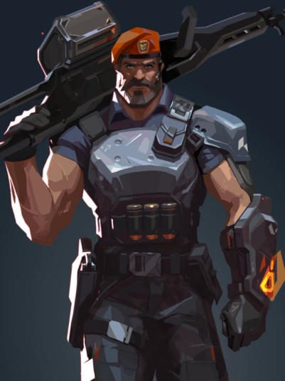
Vindo diretamente dos EUA, o arsenal orbital do Brimstone garante que o esquadrão dele sempre esteja em vantagem. Sua capacidade de oferecer utilitários com precisão e segurança faz dele um comandante inigualável na linha de frente.
Função: Controlador

INCENDIÁRIO
EQUIPE um lançador de granadas incendiárias. DISPARE para lançar uma granada que
detona no chão, gerando uma zona de fogo que causa dano aos jogadores dentro dela.

FUMAÇA CELESTE
Use para lançar nuvens de fumaça de longa duração que bloqueiam a visão na área selecionada.

SINALIZADOR ESTIMULANTE
Jogue o sinalizador diante de Brimstone. Ao pousar,
o sinalizador criará um campo que concede Tiro Rápido
aos jogadores.

ATAQUE ORBITAL
DISPARE para lançar um ataque prolongado de laser orbital
no local selecionado, causando muito dano ao longo do tempo aos jogadores na
área selecionada.
BRIMSTONE
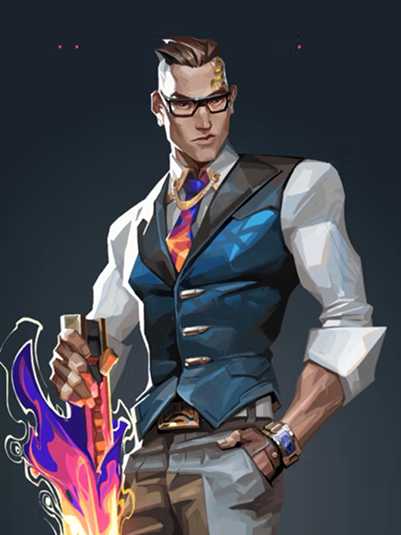
Bem-vestido e armado até os dentes, o criador de armas francês Chamber coloca os inimigos para correr com precisão mortal. Use e abuse do arsenal personalizado dele para segurar posições e abater inimigos de longe, criando a defesa perfeita para qualquer plano.
Função: Sentinela

CAÇADOR DE CABEÇAS
ATIVE para equipar uma pistola pesada.
Use o DISPARO ALTERNATIVO com a pistola equipada para mirar.

RENDEZVOUS
Enquanto estiver no chão e dentro do alcance da âncora, REATIVE para
teleportar rapidamente até a âncora.

MARCA REGISTRADA
Quando um inimigo entra no alcance, a armadilha inicia uma contagem
regressiva e desestabiliza o terreno ao redor, criando um campo que
desacelera os jogadores dentro dele.

TOUR DE FORCE
Invoca um poderoso fuzil de precisão que abate um
inimigo com qualquer acerto na parte superior do corpo.
CHAMBER
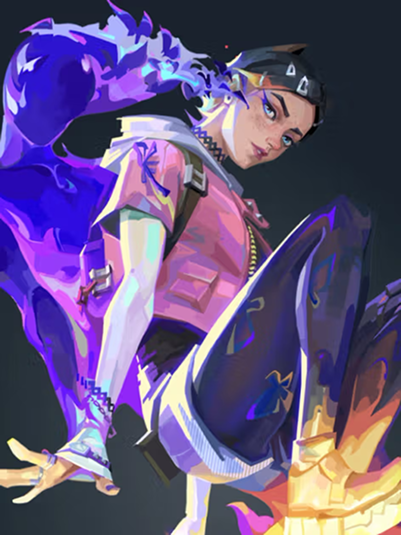
Clove, ume encrenqueire da Escócia, vai desorientar os inimigos tanto no calor do combate quanto no frio da morte. Jovem e imortal, elu mantém os inimigos confusos até do além-túmulo: momentos após a morte, elu retorna à vida.
Função: Controlador

DESVITALIZAÇÃO
DISPARE para lançá-lo. Ele detona após um breve intervalo e aplica
temporariamente Deterioração a todos os alvos atingidos.

ARTIMANHA
Use o DISPARO ALTERNATIVO para confirmar e lançar nuvens que bloqueiam
a visão nas áreas selecionadas.

REVITALIZAR
Absorva INSTANTANEAMENTE a energia vital de um inimigo caído que
sofreu dano ou foi abatido por Clove e receba aceleração e Vida temporárias.

AINDA NÃO MORRI
Após morrer, ATIVE para ressuscitar. Depois de ressuscitar,
Clove precisa obter um abate ou uma assistência de dano em um determinado
período ou morre de vez.
CLOVE
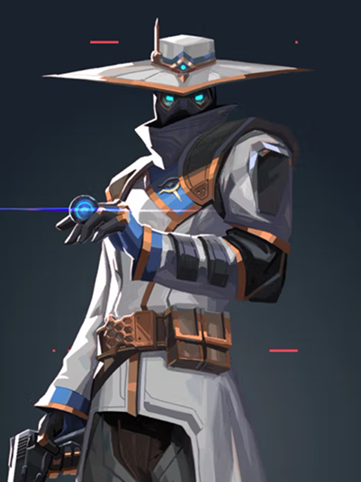
Cypher, um vendedor de informações do Marrocos, é uma verdadeira rede de vigilância de um homem só que fica de olho em cada movimento dos inimigos. Nenhum segredo está a salvo. Nenhuma manobra passa despercebida. Cypher está sempre vigiando.
Função: Sentinela

JAULA CIBERNÉTICA
Ative para criar uma zona que bloqueia a visão e reduz a velocidade de
inimigos que passarem por ela.

CÂMERA DE VIGILÂNCIA
Enquanto controla a câmera, DISPARE para lançar um dardo marcador.
O dardo revelará a localização de qualquer jogador atingido.

FIO-ARMADILHA
Cria uma linha entre o local e a parede oposta. Jogadores
inimigos que passarem por um fio e não destruírem o dispositivo a tempo ficarão
imobilizados, revelados e estonteados
ASSALTO NEURAL
Use INSTANTANEAMENTE num jogador inimigo morto na sua mira para revelar a
localização de todos os jogadores inimigos ainda vivos.
CYPHER
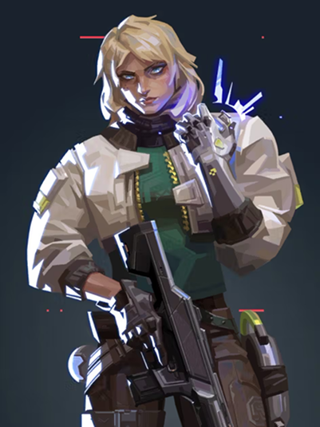
A agente norueguesa Deadlock posiciona uma gama de nanofios de alta tecnologia para proteger o campo de batalha até mesmo do ataque mais letal. Ninguém escapa do seu olhar vigilante. Ninguém sobrevive à sua ferocidade implacável.
Função: Sentinela

SENSOR SÔNICO
O sensor monitora os sons dos inimigos em uma área. Causa concussão na área se
sons de passos, disparos ou qualquer barulho significativo forem detectados.

BARREIRA DE CONTENÇÃO
Ao atingir o chão, o disco gera barreiras a partir do ponto de origem que
bloqueiam a movimentação de personagens.

GRAVNET
A GravNet detona ao atingir o chão, forçando inimigos pegos
por ela a agacharem e moverem-se lentamente.

ANIQUILAÇÃO
Libera um pulso de nanofios que captura o primeiro inimigo que encontrar.
O inimigo encasulado é puxado por uma trilha de nanofios e abatido se chegar ao final
da trilha, a não ser que seja libertado.
DEADLOCK
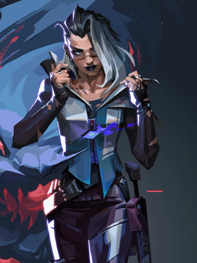
Fade, uma caçadora de recompensas turca, usa o poder dos pesadelos para capturar os segredos dos inimigos. Personificando o próprio terror, ela persegue os alvos e revela seus medos mais profundos para, depois, destruí-los na escuridão.
Função: Iniciador

CLAUSURA
Esse nódulo se rompe ao impacto, enclausurando inimigos próximos.
Inimigos enclausurados sofrem surdez e deterioração.

ASSOMBRAR
Essa assombração ataca ao contato, revelando inimigos em sua linha de
visão e criando rastros sinistros até eles.

ESPREITADOR
SEGURE O DISPARO para mover o Espreitador na direção da sua retícula.
Ele perseguirá o primeiro rastro sinistro ou inimigo que encontrar e afetará o alvo
com visão turva ao alcançá-lo.

VÉU DA NOITE
DISPARE para liberar uma onda implacável de energia aterrorizante.
Inimigos atingidos pela onda são marcados por rastros sinistros e sofrem surdez
e deterioração.
FADE

Gekko, de Los Angeles, lidera um grupo muito unido de criaturas caóticas. Seus amigos atropelam tudo, tirando os inimigos do caminho. Depois, Gekko corre atrás deles para reagrupá-los e reiniciar o processo.
Função: Iniciador

WINGMAN
Wingman lança uma forte explosão na direção do primeiro inimigo que vê.
Use o M2 na direção de um ponto ou Spike plantada para que Wingman
plante ou desarme a Spike.

DIZZY
Dizzy avança e solta explosões de plasma nos inimigos em sua linha de visão.
Os inimigos atingidos pelo plasma ficam cegos.

MOSH PIT
DISPARE para lançá-lo como uma granada.
Ao atingir uma superfície, Mosh se duplica em uma grande área e,
depois de uns instantes, explode.

THRASH
EQUIPE Thrash. DISPARE para se conectar à mente dela e guiá-la pelo
território inimigo. ATIVE para avançar e explodir, detendo qualquer inimigo em
um pequeno raio.
GEKKO

Vindo do litoral indiano, Harbor entra em campo com a força da tormenta, empunhando tecnologia ancestral com domínio sobre a água. Ele libera corredeiras espumantes e ondas esmagadoras para proteger seus aliados ou atacar aqueles que se opõem a ele.
Função: Controlador

MARÉ ALTA
SEGURE O DISPARO para guiar a água na direção da sua retícula,
fazendo surgir uma Parede que bloqueia a visão ao longo do caminho.

TEMPORAL
DISPARE para lançar, criando um redemoinho explosivo que causa Visão
Turva e Lentidão aos inimigos dentro dele após um curto período.

ENSEADA (FUMAÇA DE ENSEADA)
ATIVE para formar uma Fumaça de água no local selecionado.
REATIVE para criar um Escudo ao redor da Fumaça de água,
que bloqueia as balas que a atingem.

ACERTO DE CONTAS
DISPARE para liberar todo o poder do seu artefato, lançando uma
onda que avança em direção aos inimigos, causando Visão Turva e Lentidão
HARBOR

Iso é um mercenário chinês que entra em estado de fluxo para desmantelar os oponentes. Ele reconfigura a energia do ambiente para se proteger de balas e avança totalmente focado em direção ao próximo duelo até a morte.
Função: Duelista

CENTELHA DEBILITANTE
DISPARE para lançá-lo à frente e aplicar FRÁGIL a todos os jogadores que tocar.

FLUXO PROTETOR
Enquanto estiver focado, entre em um estado de fluxo.
Inimigos que você abater geram um orbe de energia.
Atirar nesse orbe concede a você um escudo que absorve uma instância de
dano de qualquer fonte.

CONTINGÊNCIA
DISPARE para enviar à frente uma parede de energia indestrutível que bloqueia balas.

CONTRATO DE ABATE
DISPARE para lançar uma coluna de energia pelo campo de batalha que puxa
você e o primeiro inimigo atingido por ela para a arena. Você e esse
oponente lutam até a morte.
ISO

Representando a Coreia do Sul, sua terra natal, Jett tem um estilo de luta ágil e evasivo que permite que ela assuma riscos como ninguém. Ela corre em meio a qualquer confronto, cortando os inimigos antes mesmo que eles percebam quem ou o que os atingiu.
Função: Duelista

CORRENTE ASCENDENTE
INSTANTANEAMENTE impele Jett bem alto no ar. permitindo acessar lugares altos

BRISA DE IMPULSO
ATIVE para preparar uma rajada de vento por tempo limitado.
REPITA a habilidade para lançar Jett na direção do movimento atual dela.
Se estiver parada, Jett será lançada para a frente.

ERUPÇÃO DAS BRUMAS
Lança INSTANTANEAMENTE um projétil que se expande numa breve nuvem
]que obscurece a visão ao bater numa superfície.

TORMENTA DE AÇO
Um conjunto de facas de arremesso altamente precisas.
DISPARE para lançar uma única faca contra o alvo. As facas são recarregadas
ao matar um oponente.
JETT
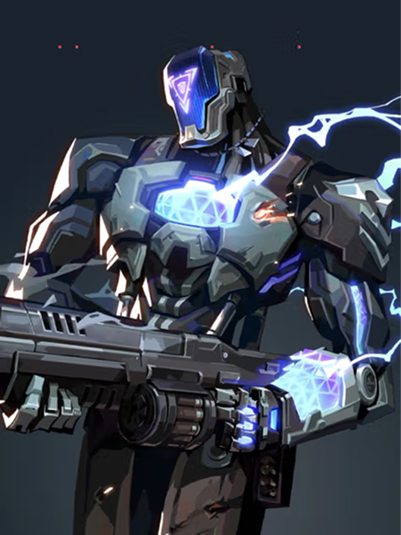
KAY/O é uma máquina de guerra construída com um único propósito: neutralizar Radiantes. Ele é capaz de Suprimir habilidades inimigas, anulando a capacidade de contra-ataque dos adversários e dando a si e a seus aliados uma vantagem essencial em combate.
Função: Iniciador

GRANADA/CLARÃO
A granada de clarão explode após um curto período,
Cegando qualquer um que estiver na linha de visão.

PONTO/ZERO
A lâmina se fixa à primeira superfície que atingir e explode,
Suprimindo qualquer um que estiver dentro do raio da explosão.

FRAG/MENTO
O fragmento se fixa ao chão e explode várias vezes, causando dano quase
letal no centro de cada explosão.

ANULAR/CMD
NSTANTANEAMENTE sobrecarrega com energia de Radianita polarizada que
emite grandes pulsos energéticos em um raio enorme a partir de onde KAY/O estiver.
Inimigos atingidos pelos pulsos são Suprimidos por um curto período.
KAYO
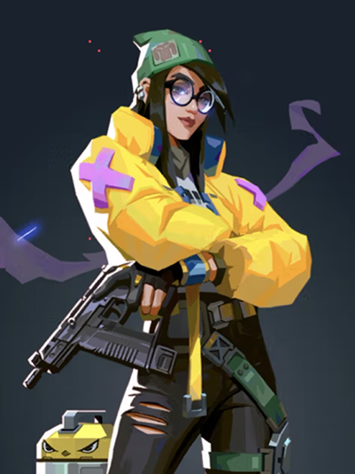
Killjoy, uma alemã genial, defende posições-chave no campo de batalha facilmente com seu arsenal de invenções. Se o dano causado por seu equipamento não der cabo dos inimigos, os efeitos negativos de seus queridos robôs darão conta do recado.
Função: Sentinela

ROBÔ DE ALARME
DISPARE para ativar um robô que persegue os inimigos que entram no alcance.
Ao se aproximar do alvo, o robô explode, causando dano e aplicando Vulnerável.

TORRETA
EQUIPE uma Torreta. DISPARE para ativar uma torreta que atira em inimigos em um cone de 180°.

NANOENXAME
Ao atingir uma superfície, a Nanoenxame fica oculta. ATIVE a Nanoenxame
para acionar um enxame de nanorrobôs que causam dano.

CONFINAMENTO
DISPARE para ativá-lo. Após um longo processo de ativação, o
dispositivo detém todos os inimigos no raio de alcance.
KILLJOY
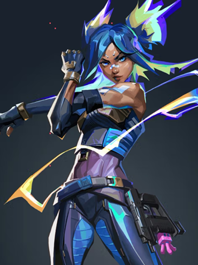
Neon, nossa Agente filipina, avança em velocidades incríveis, descarregando surtos de radiância bioelétrica tão rapidamente quanto seu corpo consegue gerá-los. Ela corre à frente para pegar os inimigos de surpresa, abatendo-os mais rápido do que um raio.
Função: Duelista

RICOCHETE ELÉTRICO
NSTANTANEAMENTE arremessa um raio de energia que ricocheteia uma vez.
Ao atingir cada superfície, o raio eletrifica o chão abaixo dele com uma explosão.

EQUIPAMENTO VOLTAICO
INSTANTANEAMENTE canaliza o poder de Neon para receber velocidade aumentada.
Ao atingir a carga máxima, use o DISPARO ALTERNATIVO para acionar um deslize elétrico

VIA EXPRESSA
DISPARE duas linhas que se estendem por
uma curta distância. Elas se tornam paredes de
eletricidade estática que bloqueiam a visão e causam dano aos inimigos que as atravessarem.

SOBRECARGA
Neon libera todo o seu poder e velocidade por um curto período.
DISPARE para canalizar isso em um raio elétrico mortal com alta precisão de
movimento.
NEON

Omen, uma lembrança fantasmagórica, caça nas sombras. Ele cega os inimigos, teleporta-se pelo campo e deixa a paranoia assumir o controle enquanto o adversário tenta descobrir de onde virá seu próximo ataque.
Função: Controlador

PARANOIA
Emite um projétil sombrio adiante, reduzindo brevemente o alcance
de visão dos jogadores tocados. O projétil atravessa paredes.

MANTO SOMBRIO
PRESSIONE o botão de habilidade para lançar o orbe no local marcado,
criando uma esfera de sombra duradoura que bloqueia a visão.

PASSOS TENEBROSOS
DISPARE para começar uma breve canalização e, então, teleporte-se para o local marcado.

SALTO DAS SOMBRAS
EQUIPE um mapa tático. DISPARE para começar a se teleportar ao local selecionado.
OMEN

Chegando com tudo diretamente do Reino Unido, o poder estelar de Phoenix reluz em seu estilo de luta, incendiando o campo de batalha com luz e estilo. Tendo ajuda ou não, ele entra na luta como e quando achar que deve.
Função: Duelista

BOLA CURVA
EQUIPE um orbe de chamas que avança em curva e detona pouco após o lançamento.
DISPARE para curvá-lo para a esquerda, detonando e cegando qualquer jogador
que vir o orbe. Use o DISPARO ALTERNATIVO para curvá-lo para a direita.

MÃOS QUENTES
DISPARE para jogar a bola de fogo, que explode após um intervalo ou
ao atingir o chão, criando uma zona duradoura de fogo que causa dano aos inimigos.

LABAREDA
Uma parede de fogo. Criar uma linha de chamas que avança,
gerando uma parede de fogo que bloqueia a visão e causa dano a jogadores que passarem por ela.

RENASCIMENTO
Com a habilidade ativa, morrer ou deixar o tempo acabar encerrarão a
habilidade e trarão Phoenix de volta ao local marcado com Vida completa.
PHOENIX
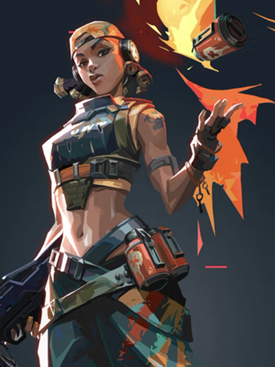
Raze chega do Brasil com uma explosão de carisma e armas enormes. Com seu estilo de jogo "porradeiro", ela é craque em desentocar inimigos entrincheirados e limpar espaços apertados com uma bela dose de BUUUM!
Função: Duelista

CARGA DE EXPLOSIVOS
INSTANTANEAMENTE joga uma Carga de Explosivos que gruda em superfícies.
REUSE a habilidade depois de instalar para detonar, causando dano e movendo
tudo que for atingido.

CARTUCHOS DE TINTA
EQUIPE uma granada múltipla. DISPARE para jogar a granada, que causa dano e cria
submunições, cada uma causando dano a qualquer um que estiver no alcance.

BUMBA
DISPARE para lançar o robô, que avança em linha reta no chão, ricocheteando nas paredes.
O Bumba trava ao detectar inimigos no cone frontal e os persegue, explodindo e
causando muito dano se alcançá-los.

ESTRAGA-PRAZERES
DISPARE um foguete que causa dano devastador em área ao fazer contato com qualquer coisa.
RAZE
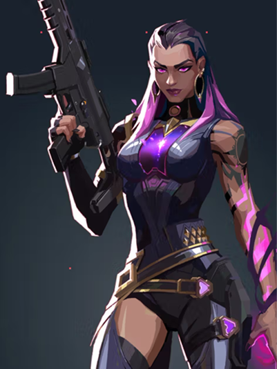
Criada no coração do México, Reyna domina o combate individual, destacando-se a cada abate efetuado. Sua capacidade só é limitada por sua própria perícia, tornando-a bastante dependente de desempenho.
Função: Duelista

DEVORAR
nimigos abatidos por Reyna deixam Orbes de Alma que duram 3s. INSTANTANEAMENTE
consome um Orbe de Alma próximo, curando-se de forma rápida por um curto período.

DISPENSAR
INSTANTANEAMENTE consome um Orbe de Alma próximo, ficando inatingível por um curto período.

OLHAR VORAZ
EQUIPE um olho etéreo e destrutível. ATIVE para lançá-lo adiante a uma curta distância.
O olho deixará com visão turva todos os inimigos que olharem para ele.

IMPERATRIZ
INSTANTANEAMENTE entra em estado de frenesi, aumentando de forma drástica as velocidades
de disparo, equipamento e recarga de munição.
REYNA

Como uma verdadeira fortaleza chinesa, Sage traz segurança para si mesma e para a equipe aonde quer que vá. Capaz de reviver aliados e rechaçar investidas agressivas, ela oferece um centro de calmaria em meio ao caos da batalha.
Função: Sentinela

ORBE DE LENTIDÃO
O orbe detona ao pousar, criando um campo duradouro que
desacelera os jogadores dentro dele.

ORBE CURATIVO
ISPARE com a mira sobre um aliado ferido para ativar uma cura ao longo do tempo.
Use o DISPARO ALTERNATIVO enquanto Sage estiver ferida para ativar uma autocura
ao longo do tempo.

ORBE DE BARREIRA
EQUIPE um orbe de barreira. DISPARE para posicionar uma parede sólida.
DISPARO ALTERNATIVO gira o marcador de alvo.

RESSURREIÇÃO
DISPARE com a mira sobre um aliado morto para começar a revivê-lo.
Depois de uma breve canalização, o aliado voltará com a Vida completa.
SAGE
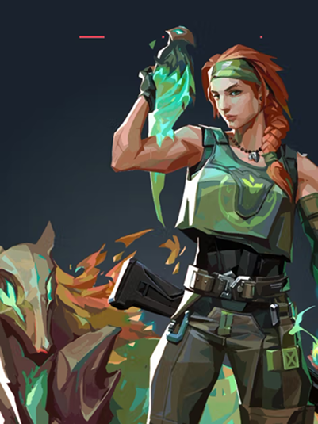
Mandando um salve direto da Austrália, Skye e sua equipe de feras desbravam territórios hostis. Com seus poderes de cura e suas criações que partem pra cima dos inimigos, qualquer equipe ficará mais forte e mais segura tendo Skye como aliada.
Função: Iniciador

PREDADOR EXPLOSIVO
DISPARE para enviar e controlar esse predador. Enquanto estiver no controle,
DISPARE para saltar para a frente. O lobo gera uma explosão e causa dano aos
inimigos diretamente atingidos.

LUZ DESBRAVADORA
SEGURE O DISPARO para guiar o falcão na direção da sua mira.
REPITA a habilidade enquanto ele estiver voando para transformá-lo em um
feixe de luz que gera uma confirmação de hit caso um inimigo esteja dentro
do alcance ou na linha de visão.

REFLORESCER
SEGURE O DISPARO para canalizar, curando aliados dentro do alcance e na sua linha de visão.

RASTREADORES
DISPARE para enviar três Rastreadores que localizarão os três inimigos mais próximos.
SKYE

Nascido sob o eterno inverno das tundras russas, Sova rastreia, encontra e elimina inimigos com eficiência e precisão implacáveis. Seu arco personalizado e suas habilidades inigualáveis de reconhecimento garantem que nenhuma presa escape.
Função: Iniciador

FLECHA DE CHOQUE
Um arco com uma flecha de choque. DISPARE para lançar a flecha, que
explode com o impacto causando dano aos jogadores próximos.

FLECHA RASTREADORA
Um arco com uma flecha de reconhecimento. DISPARE para lançar a
flecha, que é ativada no impacto e Revela a localização de inimigos
próximos da linha de visão.

DRONE CORUJA
Enquanto pilota o drone, DISPARE para atirar um dardo marcador. O dardo revelará
a localização de qualquer jogador atingido.

FÚRIA DO CAÇADOR
Um arco com três disparos de longo alcance que perfuram paredes.
DISPARE para atirar um raio de energia, causando dano e revelando
a localização dos inimigos que estiverem na linha.
SOVA

Viper, a química dos Estados Unidos, emprega uma variedade de dispositivos químicos venenosos para controlar o campo de batalha e prejudicar a visão do inimigo. Se as toxinas não matarem a presa, seus jogos mentais certamente o farão.
Função: Controlador

NUVEM VENENOSA
EQUIPE um emissor de gás. DISPARE para jogar o emissor, que persiste até o fim da rodada.
Cria uma nuvem de gás tóxico que drena combustível.

CORTINA TÓXICA
EQUIPE um lançador de emissores de gás. DISPARE para lançar uma longa linha de emissores de gás.

VENENO DE COBRA
EQUIPE um lançador químico. DISPARE para lançar um cilindro que se rompe ao atingir o
chão, gerando uma zona química duradoura que causa dano e reduz a velocidade dos inimigos.

POÇO PEÇONHENTO
DISPARE para borrifar uma nuvem química em todas as direções ao redor de Viper,
criando uma grande nuvem que reduz o alcance de visão e a Vida máxima dos jogadores
dentro dela.
VIPER
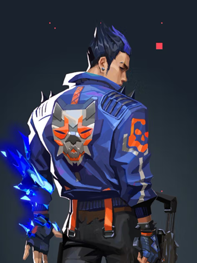
Yoru, nativo do Japão, abre fendas na realidade para infiltrar as linhas inimigas sem ser visto. Ele usa tanto artimanhas quanto táticas agressivas, e os alvos são abatidos sem saber de onde o ataque veio.
Função: Duelista

PONTO CEGO
DISPARE para lançar o fragmento, ativando um clarão que se dissipa ao atingir uma superfície sólida.

PASSAGEM DIMENSIONAL
EQUIPE um fluxo dimensional. DISPARE para lançá-lo à frente. Use o DISPARO
ALTERNATIVO para posicionar um fluxo imóvel. ATIVE para se teleportar até ele.

DISTRAÇÃO
EQUIPE um eco dimensional que se transforma em uma cópia do Yoru quando ativado.
As cópias explodem e cegam os inimigos quando destruídas por eles.

ESPIONAGEM DIMENSIONAL
Uma máscara para olhar por entre as dimensões. DISPARE para entrar na dimensão do Yoru, onde você não poderá ser afetado nem visto pelos inimigos lá fora.
YORU
Projeto com fins educacionais • © 2026 Gustavo Moraes